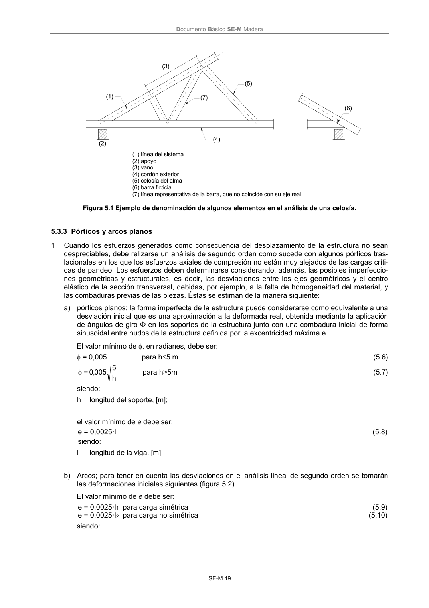
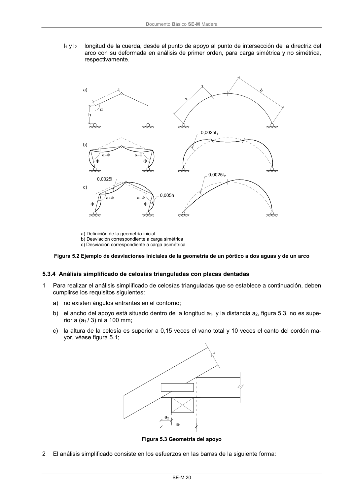

DB-SE-M · 5.3.3 Pórticos y arcos planos · versión 2019-12-20 · capa oficial
Formatos: JSON compacto · Markdown · PDF fuente
Ámbito del documento · texto del ámbito · documento y tablas
ID técnico a0056 · PDF pág. 25-26 · jerarquía no validada por persona · contrastado con el literal de la página 25 (candidato tipográfico); no validado por persona · padre: raíz
5.3.3 Pórticos y arcos planos 1 Cuando los esfuerzos generados como consecuencia del desplazamiento de la estructura no sean despreciables, debe relizarse un análisis de segundo orden como sucede con algunos pórticos tras- lacionales en los que los esfuerzos axiales de compresión no están muy alejados de las cargas críti- cas de pandeo. Los esfuerzos deben determinarse considerando, además, las posibles imperfeccio- nes geométricas y estructurales, es decir, las desviaciones entre los ejes geométricos y el centro elástico de la sección transversal, debidas, por ejemplo, a la falta de homogeneidad del material, y las combaduras previas de las piezas. Éstas se estiman de la manera siguiente: a) pórticos planos; la forma imperfecta de la estructura puede considerarse como equivalente a una desviación inicial que es una aproximación a la deformada real, obtenida mediante la aplicación de ángulos de giro Φ en los soportes de la estructura junto con una combadura inicial de forma sinusoidal entre nudos de la estructura definida por la excentricidad máxima e. El valor mínimo de , en radianes, debe ser: = 0,005 para h5 m (5.6) h 5 005 ,0 = para h>5m (5.7) siendo: h longitud del soporte, [m]; el valor mínimo de e debe ser: e = 0,0025·l (5.8) siendo: l longitud de la viga, [m]. b) Arcos; para tener en cuenta las desviaciones en el análisis lineal de segundo orden se tomarán las deformaciones iniciales siguientes (figura 5.2). El valor mínimo de e debe ser: e = 0,0025·l1 para carga simétrica (5.9) e = 0,0025·l2 para carga no simétrica (5.10) siendo: DocumentoBásico SE-M Madera SE-M 20 l1 y l2 longitud de la cuerda, desde el punto de apoyo al punto de intersección de la directriz del arco con su deformada en análisis de primer orden, para carga simétrica y no simétrica, respectivamente. a) Definición de la geometría inicial b) Desviación correspondiente a carga simétrica c) Desviación correspondiente a carga asimétrica Figura 5.2 Ejemplo de desviaciones iniciales de la geometría de un pórtico a dos aguas y de un arco


PDF fuente redistribuible: copia fiel enlazada en esta página (SHA256 verificado).